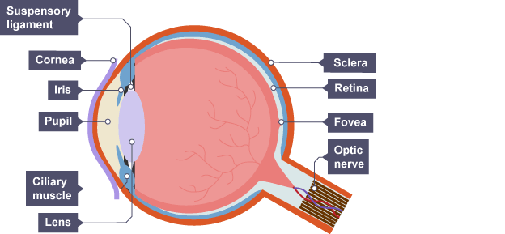

school
The eye
- The eye has many different varied parts
- Ciliary muscles hold the eye in place
- The cornea lets light into the eye and begins focusing it
- The iris controls the amount of light entering the eye
- The lens focuses light onto the retina
- The optic nerve sends signals from the eye to the brain
- The pupil lets light through the lens
- The retina is a light-sensitive layer; it sends signals to the optic
nerve
- The suspensory ligaments pull the lens in order to focus it
- Some people are short-sighted, and others are long-sighted
- Shortsightedness is when one struggles with distant objects
- The lens is wider, so the focus point is in front of the retina
- It requires concave lenses to correct
- Farsightedness is when one struggles with close objects
- The lens is too thin, so the focus point is behind the retina
- It requires convex lenses to correct
- The lens changes shape to focus an image on the retina
- When an object is close, the following happens:
- The ciliary muscle contracts
- The suspensory ligament relaxes
- The lens becomes fat
- When an object is distant, the following happens:
- The ciliary muscle relaxes
- The suspensory ligament contracts
- The lens becomes thin
- The iris controls the amount of light that enters the eye
- In bright light:
- The circular muscles contract
- The radial muscles relax
- In dim light:
- The circular muscles relax
- The radial muscles contract

The eye|700